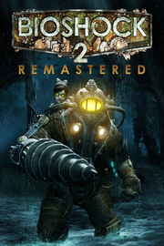

|  | |
| Tiempo de juego | No Jugado |
| Última actividad | Nunca |
| Añadido | 11/6/2024 14:41:31 |
| Modificado | 11/17/2024 15:02:04 |
| Estado de finalización | No Jugado |
| Librería | Playnite |
| Fuente | 1 TB 1 |
| Plataforma | PC (Windows) |
| Fecha de lanzamiento | 9/15/2016 |
| Puntuación de la Comunidad | 69 |
| Puntuación de la Crítica | |
| Puntuación de usuario | |
| Género | Acción Rol |
| Desarrollador | 2K Australia 2K China 2K Marin Blind Squirrel Digital Extremes Feral Interactive (Mac) |
| Editor | 2K Feral Interactive (Mac) |
| Característica | Cloud Saves Compat. Total Con Mando Logros De Préstamo Familiar Un Jugador |
| Enlaces | Punto de encuentro Discusiones Guías Noticias Página de la tienda PCGamingWiki Logros |
| Tag | Acción Ambientales Aventura Buena trama Ciencia ficción Disparos Distopías FPS Gran banda sonora Historia alternativa Multijugador Oscuros Primera persona Rol Simulador inmersivo Steampunk Subacuáticos Terror Un jugador Versiones nuevas |